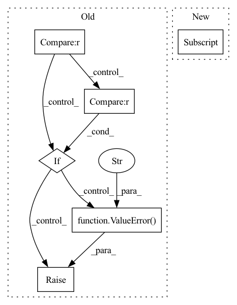

Pattern ID :2932
Before Change
// Pooling
// out: (BB, embedding_dim, NN)
if self._pooling_func_name == "max" :
out = torch.max(out, -1, keepdim=True)[0]
elif self._pooling_func_name == "mean":
out = torch.mean(out, keepdim=True, dim=-1)
elif self._pooling_func_name == "sum" :
out = torch.sum(out, keepdim=True, dim=-1)
else:
raise ValueError(f"Pooling function {self._pooling_func_name} is not yet supported!" )
// out: (BB, embedding_dim, 1)
out = torch.flatten(out, start_dim=-2)
After Change
masking_input = {"in_tensor": out.transpose(2, 1)}
if self.use_masking:
masking_input["mask_tensor"] = masking_tensor
out = self.pooling_block(masking_input)["masking_out"]
// output_tensor: (BB, embedding_dim)
// out: (BB, embedding_dim)
out = self.fc1(out)In pattern: SUPERPATTERN
Frequency: 3
Non-data size: 6
Instances Fragment ID: 9738437
Project Name: enlite-ai/maze
Commit Name: 53a9f4e4997b8a5451f14fb57dd6c5cb9becd110
Time: 2021-04-15
Author: office@enlite.ai
File Name: maze/perception/blocks/feed_forward/point_net.py
M Class Name: PointNetFeatureTransformNet
N Class Name: PointNetFeatureTransformNet
M Method Name: forward(3)
N Method Name: forward(2)
M Parent Class: nn.Module
N Parent Class: nn.Module
M File Name: maze/perception/blocks/feed_forward/point_net.py
N File Name: maze/perception/blocks/feed_forward/point_net.py
M Start Line: 93
M End Line: 127
N Start Line: 80
N End Line: 134
Before Change
batch, permutation_dim, -1
)
if self.combining_operation == "mean" :
e = iid_embeddings.mean(dim=1)
elif self.combining_operation == "sum" :
e = iid_embeddings.sum(dim=1)
else:
raise ValueError("combining_operation must be in ["sum", "mean"]." )
embedding = self.fc_subnet(e)
return embeddingAfter Change
trial_counts = torch.zeros(batch, 1)
for i in range(batch):
// remove NaNs
valid_x = x[i, ~torch.isnan(x[i, :, 0] ), :]
trial_counts[i] = valid_x.shape[0]
trial_embeddings = self.trial_net(valid_x)
// apply combining operation over permutation dimension Fragment ID: 9738434
Project Name: mackelab/sbi
Commit Name: 1352e77bdbc47aa4a4130679903b57672e48218c
Time: 2023-03-01
Author: jan.boelts@tum.de
File Name: sbi/neural_nets/embedding_nets.py
M Class Name: PermutationInvariantEmbedding
N Class Name: PermutationInvariantEmbedding
M Method Name: forward(2)
N Method Name: forward(2)
M Parent Class: nn.Module
N Parent Class: nn.Module
M File Name: sbi/neural_nets/embedding_nets.py
N File Name: sbi/neural_nets/embedding_nets.py
M Start Line: 271
M End Line: 284
N Start Line: 277
N End Line: 304
Before Change
pred = self.var_predict_multi * self.var_predict_module(input)
if torch.isnan(pred).any() or torch.isinf(pred).any():
raise RuntimeError(f"{self.id}"s `predict_variance` produced nans/infs")
if len(pred.shape) == 1 :
raise ValueError(
f"{self.id} `predict_variance` module output should have 2D output, got {len(pred.shape)}"
)
elif pred.shape[-1] not in (1, self.param_rank) :
raise ValueError(
f"{self.id} `predict_variance` module output should have `shape[-1]` of "
f"{self.param_rank}, got {pred.shape[-1]}"
)
if pred is not None:
diag_multi = torch.diag_embed(torch.exp(pred))
mini_cov = diag_multi @ mini_cov @ diag_multi
After Change
pred = None
if self.var_predict_module is not None and not _ignore_input:
pred = self.var_predict_module(*[inputs[x] for x in self.expected_kwargs])
if torch.isnan(pred).any() or torch.isinf(pred).any():
raise RuntimeError(f"{self.id}"s `predict_variance` produced nans/infs")
if (pred < 0).any(): Fragment ID: 9738431
Project Name: strongio/torchcast
Commit Name: d98b47d1ac38c61653093efd887cc672f228917d
Time: 2021-09-01
Author: jacob.dink@strong.io
File Name: torchcast/covariance/base.py
M Class Name: Covariance
N Class Name: Covariance
M Method Name: forward(5)
N Method Name: forward(3)
M Parent Class: nn.Module
N Parent Class: nn.Module
M File Name: torchcast/covariance/base.py
N File Name: torchcast/covariance/base.py
M Start Line: 246
M End Line: 266
N Start Line: 266
N End Line: 290